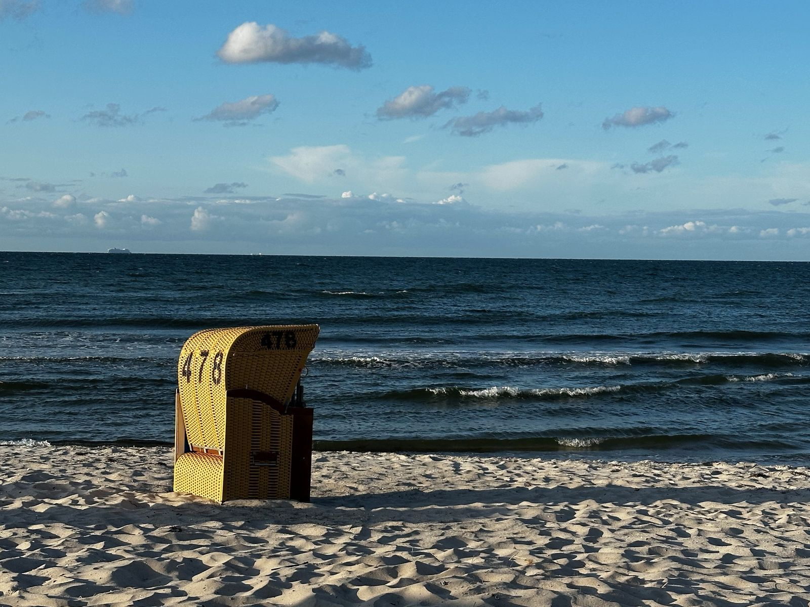
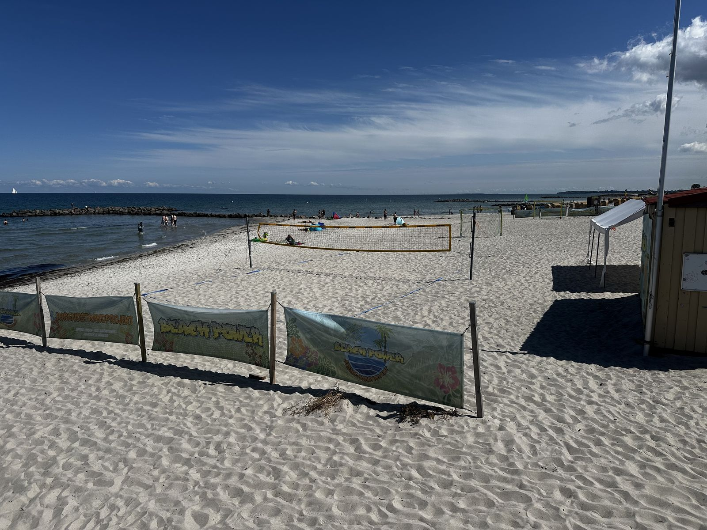
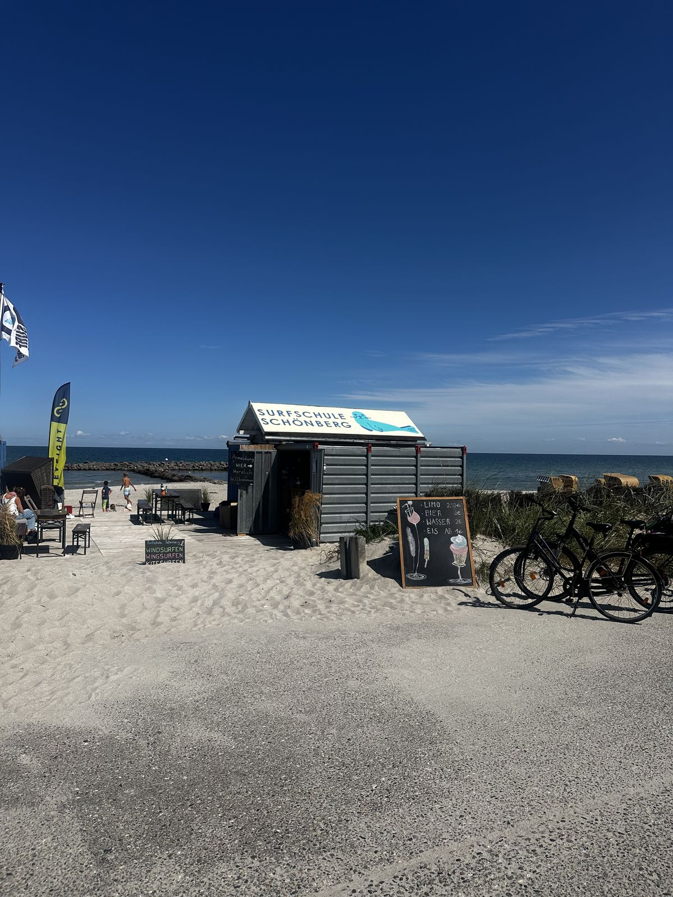
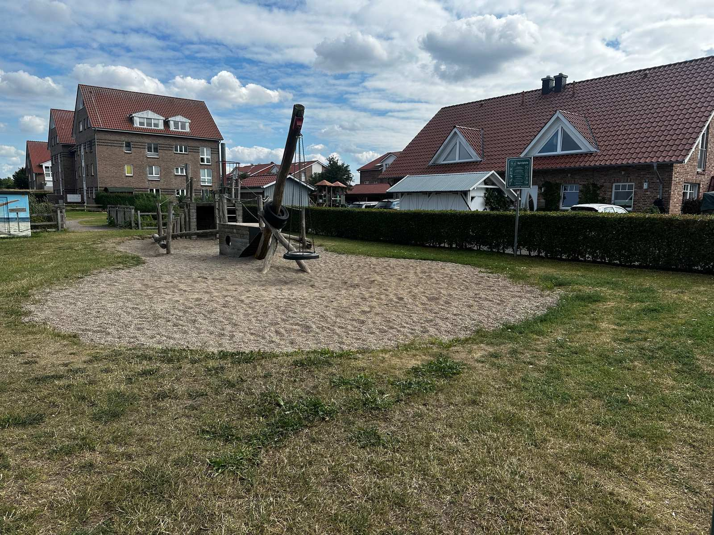
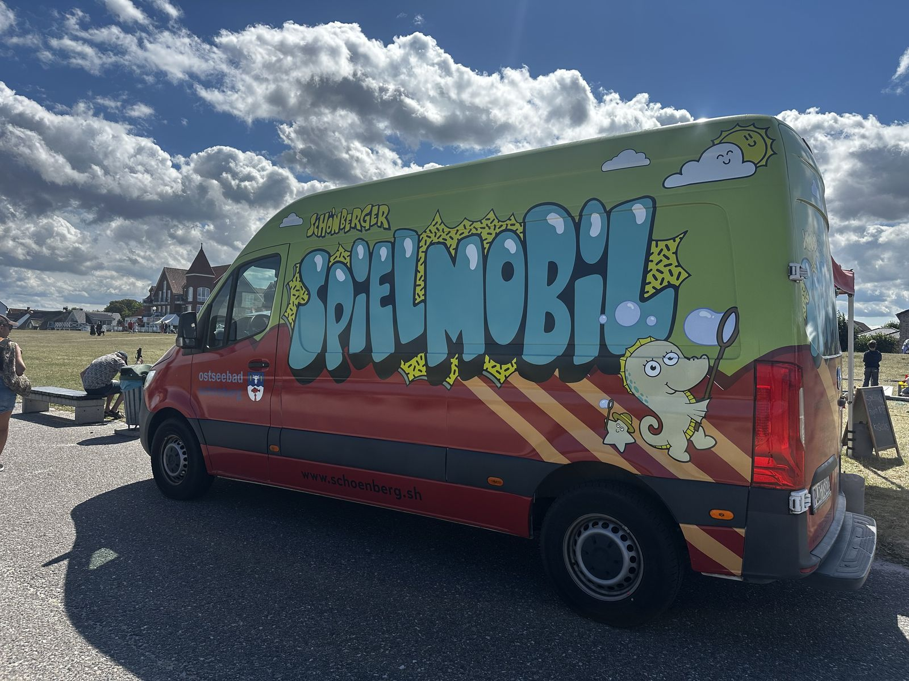
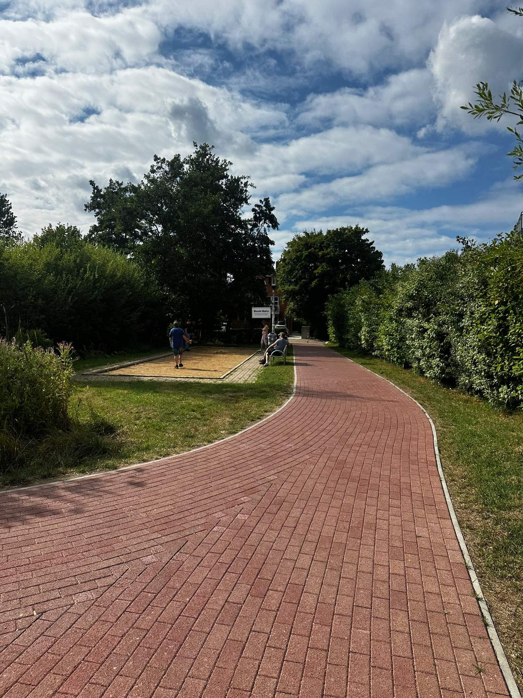
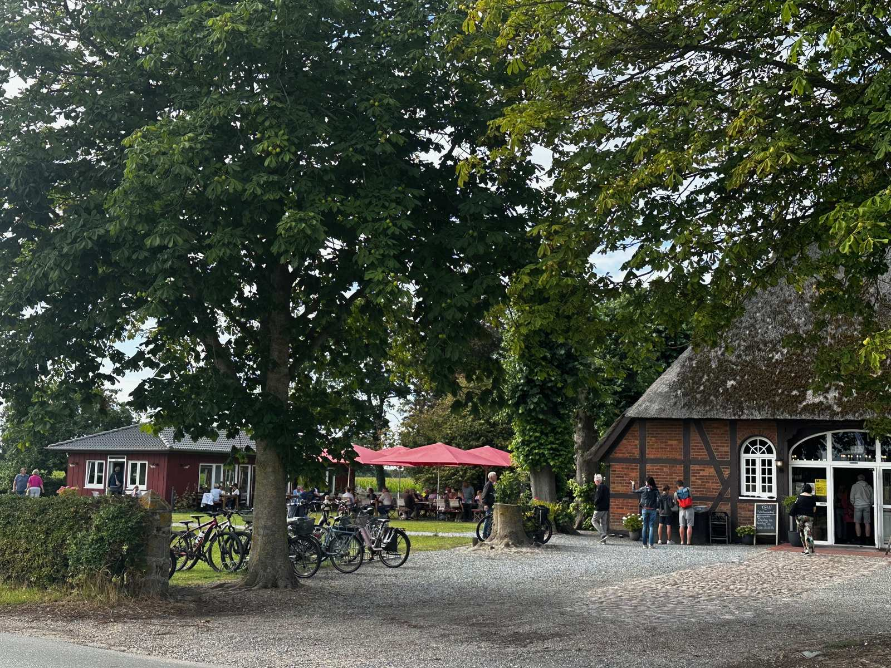
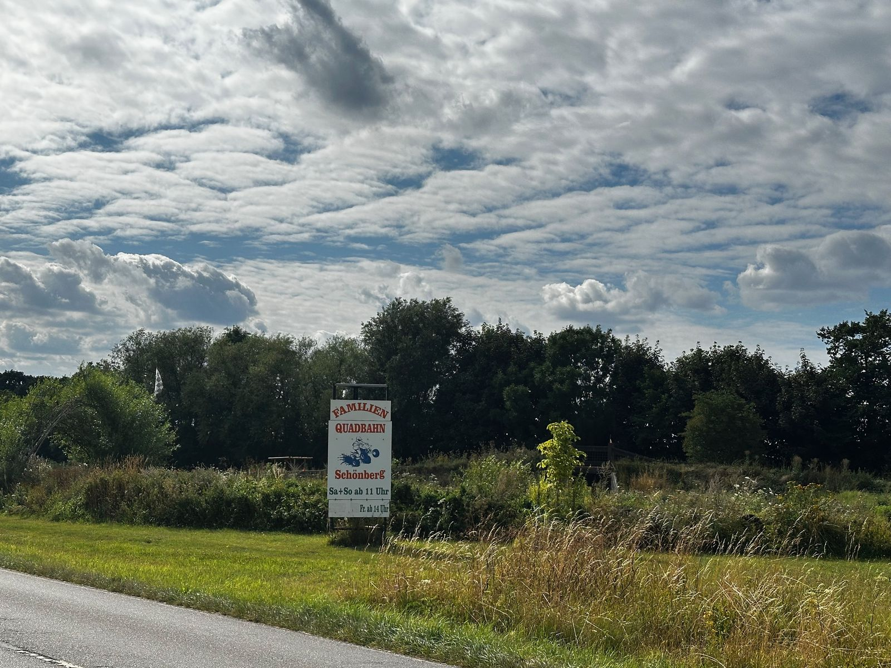

Feiner Ostseestrand, viel Platz für Kinder und schöne Ausflugsziele in der Probstei – und unsere Ferienwohnung Casa Baltica nur 100 m vom Wasser entfernt.
Von der Casa Baltica sind es nur rund 100 Meter bis zum Ostseestrand – morgens kurz ans Wasser, mittags zurück in den eigenen Garten. Die Strandpromenade und der Ostseeküsten-Radweg liegen ebenfalls gleich um die Ecke.

In der Saison lassen sich Strandkörbe mieten – der klassische, windgeschützte Logenplatz am Meer. Die Körbe sind gefragt; am besten vorab über die App BeachNow reservieren.

Direkt am Strand, rechts neben der Seebrücke, gibt es Felder für Beachvolleyball und Beachfußball – Ball einpacken und lospielen.

Surfen, Windsurfen und SUP direkt am Strand – mit Anfängerkursen für Einsteiger. Kurse & Infos →
An den bewachten Abschnitten sorgt die DLRG für Sicherheit. Die Strandflaggen zeigen, wo Baden sicher ist:
Der Strand ist von Dünen gesäumt. Bitte nutzen Sie die vorgesehenen Strandzugänge – so bleibt der Dünenschutz erhalten. Und beim Fischbrötchen am Strand den Luftraum im Blick behalten: Die Möwen sind flink 😉
Unsere Tipps aus vielen Jahren Schönberger Strand – damit bei Groß und Klein keine Langeweile aufkommt.

Ein schöner Spielplatz mit Klettergeräten liegt wenige Gehminuten entfernt. Weitere Spielplätze in der Umgebung:

Für die Kleineren: Das Schönberger Spielmobil bringt in der Saison Spielgeräte und Bastelangebote an den Strand bzw. auf die Promenade. Termine & Infos →

Direkt am Promenadenweg gibt es eine Boulebahn – Kugeln mitnehmen und loslegen.
Im Sommer im Freien beim SSV Marina Wendtorf, ganzjährig in der Tennishalle Heikendorf.
Der Klassiker für Groß und Klein: Minigolf & Fahrradvermietung Gnutzmann im benachbarten Ostseebad Kalifornien – dort kann man auch Fahrräder leihen.
Freizeitpark direkt an der Ostsee in Sierksdorf – Achterbahnen, Fahrgeschäfte und Shows für einen ganzen Tagesausflug.
Familien-Ausflugsziel in Blekendorf (Hohwachter Bucht): Bauernhof-Café, Abenteuer-Spielwelt mit Trampolinen, Kettcars und Streichelzoo sowie Obst zum Selbstpflücken.
Rund um Schönberg und in der Kieler Bucht gibt es viel zu entdecken – auch für Regentage.

Das reetgedeckte Heuer's Café für Kaffee & Kuchen, dazu saisonal Bauerngolf und ein Mais-Labyrinth – gut mit dem Rad erreichbar.

Action für ältere Kinder und Erwachsene: die Quadbahn Kiddy-Quad bei Schönberg oder E-Karting bei evoKART in Kiel.
Der Verein VVM betreibt am Schönberger Strand eine historische Museumsbahn und ein Straßenbahnmuseum – nostalgische Fahrten, die Kindern viel Freude machen.
Im Alten Amtsgericht in Schönberg (Knüllgasse 16) geht es auf eine Reise in vergangene Kindheitstage – auch bei Regen ein schönes Ziel. kindheitsmuseum.de →
Regionalmuseum in Schönberg zur Geschichte und Tracht der Probstei – ideal für einen verregneten Vormittag.
Die Landeshauptstadt mit Hafen, Museen (u. a. Schifffahrtsmuseum) und Shopping liegt rund 25 km entfernt.
Günstiges Highlight: das Aquarium GEOMAR am Hafen (Eintritt ca. 3 €). aquarium-geomar.de →
Gottesdienste, Besichtigung und Turmbesteigung mit Blick über die Probstei. Besonders schön: die Strandgottesdienste direkt am Meer.
Ein legendäres Café, weit über die Region hinaus bekannt für seinen Kuchen. Bitte beachten: nur Barzahlung.
Lässt sich gut mit dem Irrgarten verbinden (Eintritt 2,50 €): irrgarten.biz →
Der Ostseeküsten-Radweg beginnt praktisch vor der Tür – flach und familienfreundlich entlang der Küste. Ein Fahrradabstellplatz gehört zur Wohnung.
Restaurants, Cafés und Fischbrötchenbuden erreichen Sie in wenigen Gehminuten an der Promenade. Unsere Empfehlungen: Fisch Ehlers für frischen Fisch und Fischbrötchen (fisch-ehlers.de) und das Restaurant Filou (filou-ostsee.de).
Feste, Märkte, Konzerte und mehr: Was während Ihres Urlaubs in der Probstei los ist, zeigt der offizielle Veranstaltungskalender. Aktuelle Meldungen rund um den Schönberger Strand finden Sie außerdem auf unserer Startseite.
Die Casa Baltica: ca. 50 m² im Erdgeschoss, 2 Schlafzimmer, Terrasse mit eigenem Garten – in ruhiger zweiter Reihe, nur 100 m zum Strand. Gebucht wird über die Tourist-Info Schönberger Strand.
Tourist-Information Schönberger Strand · Tel: 04344 4141-0
Objekt-Nr. 26118 · "Casa Baltica" — Kiefernweg 18, App. 4